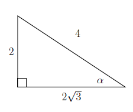
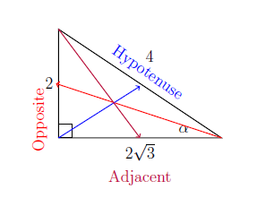
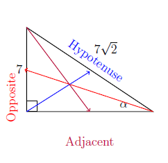
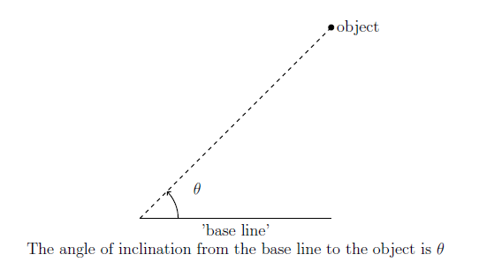
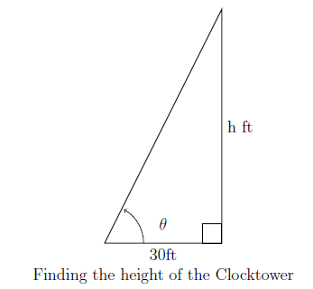
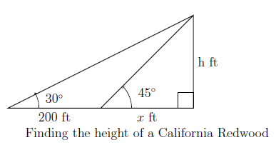
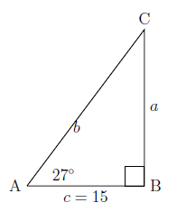
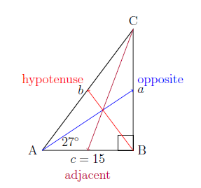
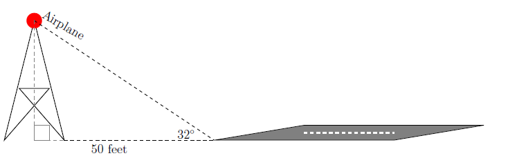

Right Triangle Trigonometry
In the previous section we introduced the six basic trigonometric functions and their rotations around the Unit Circle. In this section, we will dive deeper into those functions and how you can use them to find sides and angles in a right triangle, even when the Unit Circle is not involved.
It is important to note that these six functions only work in right triangles using the methods outlined here. Right triangle trigonometry relies on special relationships between the sides, which create different ratios.
Given a right triangle with a selected angle \( \theta \):
| \( \sin(\theta) = \frac{\text{Opposite}}{\text{Hypotenuse}} \) | \( \csc(\theta) = \frac{\text{Hypotenuse}}{\text{Opposite}} \) |
| \( \cos(\theta) = \frac{\text{Adjacent}}{\text{Hypotenuse}} \) | \( \sec(\theta) = \frac{\text{Hypotenuse}}{\text{Adjacent}} \) |
| \( \tan(\theta) = \frac{\text{Opposite}}{\text{Adjacent}} \) | \( \cot(\theta) = \frac{\text{Adjacent}}{\text{Opposite}} \) |
A common mnemonic for remembering these relationships is SohCahToa.
Example 1
Find all six trigonometric functions for the triangle below.

Solution
Identify the sides as opposite, adjacent, and hypotenuse:

| \( \sin(\alpha) = \frac{2}{4} = \frac{1}{2} \) | \( \csc(\alpha) = \frac{4}{2} = 2 \) |
| \( \cos(\alpha) = \frac{2\sqrt{3}}{4} = \frac{\sqrt{3}}{2} \) | \( \sec(\alpha) = \frac{4}{2\sqrt{3}} = \frac{2}{\sqrt{3}} = \frac{2\sqrt{3}}{3} \) |
| \( \tan(\alpha) = \frac{2}{2\sqrt{3}} = \frac{\sqrt{3}}{3} \) | \( \cot(\alpha) = \frac{2\sqrt{3}}{2} = \sqrt{3} \) |
Occasionally we use the Pythagorean Theorem $$a^2 + b^2 = c^2$$ to find missing sides: $$\text{adjacent}^2 + \text{opposite}^2 = \text{hypotenuse}^2$$
Example 2
Find all six trigonometric functions for this triangle:

Use the Pythagorean theorem to find the missing side:
$$7^2 + x^2 = (7\sqrt{2})^2$$ $$49 + x^2 = 98$$ $$x^2 = 49$$ $$x = 7$$
| $$\sin(\alpha) = \frac{7}{7\sqrt{2}} = \frac{\sqrt{2}}{2}$$ | $$\csc(\alpha) = \frac{7\sqrt{2}}{7} = \sqrt{2}$$ |
| $$\cos(\alpha) = \frac{7}{7\sqrt{2}} = \frac{\sqrt{2}}{2}$$ | $$\sec(\alpha) = \frac{7\sqrt{2}}{7} = \sqrt{2}$$ |
| $$\tan(\alpha) = \frac{7}{7} = 1$$ | $$\cot(\alpha) = \frac{7}{7} = 1$$ |
Reciprocal Identities
\( \sin x = \dfrac{1}{\csc x} \)
\( \csc x = \dfrac{1}{\sin x} \)
\( \cos x = \dfrac{1}{\sec x} \)
\( \sec x = \dfrac{1}{\cos x} \)
\( \tan x = \dfrac{1}{\cot x} \)
\( \cot x = \dfrac{1}{\tan x} \)
Quotient Identities
\( \tan x = \dfrac{\sin x}{\cos x} \)
\( \cot x = \dfrac{\cos x}{\sin x} \)
Pythagorean Identities
\( \sin^2 x + \cos^2 x = 1 \)
\( 1 + \cot^2 x = \csc^2 x \)
\( 1 + \tan^2 x = \sec^2 x \)
| θ (degrees) | θ (radians) | tan(θ) | cot(θ) |
|---|---|---|---|
| 0° | 0 | 0 | undefined |
| 30° | π/6 | √3/3 | √3 |
| 45° | π/4 | 1 | 1 |
| 60° | π/3 | √3 | √3/3 |
| 90° | π/2 | undefined | 0 |
Example 3
Find the indicated values, if they exist.- \(\sec(60^\circ)\)
- \(\csc(7\pi/4)\)
- \(\cot(3)\)
- \(\tan(\theta)\), where θ is coterminal with 3π/2
- \(\cos(\theta)\), where \(\csc(\theta) = -\sqrt{5}\) and θ is Quadrant IV
- \(\sin(\theta)\), where \(\tan(\theta) = 3\) and π < θ < 3π/2
- \(\sec(60^\circ) = \frac{1}{\cos(60^\circ)} = 2\)
- \(\csc(7\pi/4) = \frac{1}{\sin(7\pi/4)} = -\sqrt{2}\)
- \(\cot(3) = \frac{\cos(3)}{\sin(3)} \approx -7.015\)
- Undefined, since \(\tan(\theta) = \frac{\sin(\theta)}{\cos(\theta)} = \frac{-1}{0}\)
- \(\cos(\theta) = \frac{2\sqrt{5}}{5}\)
- \(\sin(\theta) = -\frac{3\sqrt{10}}{10}\)
Applications
It should come as no surprise by now that we have all of this information so we can solve real-world problems involving angles and triangles.
The following example uses trigonometry as well as the concept of an `angle of inclination.' The angle of inclination (or angle of elevation) of an object refers to the angle whose initial side is some kind of base-line (say, the ground), and whose terminal side is the line-of-sight to an object above the base-line. This is represented schematically below.

Example 4
The angle of inclination from a point on the ground 30 feet away to the top of Lakeland's Armington Clocktower is $60^{\circ}$. Find the height of the Clocktower to the nearest foot.
Solution
We can represent the problem situation using a right triangle as shown below. Let $h$ denote the height of the Clocktower. Then we have:
\[ \tan\left(60^{\circ}\right) = \frac{h}{30} \]
Solving for $h$ gives:
\[ h = 30 \cdot \tan\left(60^{\circ}\right) = 30 \sqrt{3} \approx 51.96 \]
Hence, the Clocktower is approximately 52 feet tall.

Example 5
In order to determine the height of a California Redwood tree, two sightings from the ground, one 200 feet directly behind the other, are made. If the angles of inclination were $45^{\circ}$ and $30^{\circ}$, respectively, how tall is the tree to the nearest foot?\\
Solution
Sketching the problem situation below, we find ourselves with two unknowns: the height $h$ of the tree and the distance $x$ from the base of the tree to the first observation point.

We get a pair of equations: \(\tan\left(45^{\circ}\right) = \frac{h}{x}\) and \(\tan\left(30^{\circ}\right) = \frac{h}{x+200}\). Since \(\tan\left(45^{\circ}\right) = 1\), the first equation gives \(\frac{h}{x} = 1\), or \(x = h\). Substituting this into the second equation gives \(\frac{h}{h+200} = \tan\left(30^{\circ}\right) = \frac{\sqrt{3}}{3}\). Clearing fractions, we get \(3h = (h+200)\sqrt{3}\). This is a linear equation for \(h\), so we expand and gather terms:
\[ \begin{array}{rcl} 3h & = & (h+200)\sqrt{3} \\[3pt] 3h & = & h \sqrt{3} + 200 \sqrt{3} \\[3pt] 3h - h \sqrt{3} & = & 200 \sqrt{3} \\[3pt] (3-\sqrt{3}) h & = & 200 \sqrt{3} \\[3pt] h & = & \dfrac{200\sqrt{3}}{3-\sqrt{3}} \approx 273.20 \end{array} \]
Hence, the tree is approximately 273 feet tall.
Trigonometry of Any Angle
We've looked at trigonometry when we are using special angles or when given all of the sides to find the ratio. But, we haven't really explored the entire aspect of why trigonometry is important. It is important because it allows us to solve real life applications. As seen in the previous examples. However, trigonometry is so much more.
Let's look at the first scenario. Perhaps we want to solve a right triangle but we were only given one angle and one side. Could we find the other two sides from that information? Absolutely. But first let's review some facts from geometry class.
- Angles are capital letters and sides are lower case letters.
- Side \(a\) is opposite Angle A, side \(b\) is opposite Angle B, and side \(c\) is opposite Angle C.
- The shortest side is opposite the smallest angle.
- The longest side is opposite the largest angle.
- The sum of the interior angles of a triangle is equal to \(180^{\circ}\).
Example 6
Solve the triangle below using trigonometry.

Solution
For this example we were given one angle and one side. That means we'd need to set up some trigonometric ratios to help us solve this triangle.To do that we're going to need to identify the opposite, adjacent, and hypotenuse for $\triangle ABC$

We can see that we have the adjacent side and an angle, that means we can find the opposite side by using Tangent and the hypotenuse by using Cosine. Additionally we can find Angle C by $180^{\circ}-\angle A-\angle B=180^{\circ}-27^{\circ}-90^{\circ}=63^{\circ}$.Now we are ready to find our other two sides using our ratios.
Side \(b\)
\(\cos(27^{\circ}) = \frac{15}{b}\)
\(b \cos(27^{\circ}) = 15\)
\(b = \frac{15}{\cos(27^{\circ})}\)
\(b \approx 16.83\)
Side \(a\)
\(\tan(27^{\circ}) = \frac{a}{15}\)
\(15 \tan(27^{\circ}) = a\)
\(a \approx 7.64\)
It is important to notice a few things once you've solved the question:
- Our shortest side \(a \approx 7.64\) is opposite our smallest angle \(\angle A = 27^{\circ}\).
- Our longest side \(b \approx 16.83\) is opposite our largest angle \(\angle C = 90^{\circ}\).
- Our hypotenuse is always our longest side.
- We use the approximate symbols because we have rounded our side values and in turn we've made an approximation of our lengths. The exact lengths would be those with the trigonometric piece still in them.
We can also use this idea to solve application problems. The trick to all of these types of problems is identifying the pieces you have and using them to help you derive a plan to find the pieces you need. Sometimes it can be helpful to create a "have" and "need" list.
Example 7
An airplane makes its decent into a landing strip with an angle of elevation of $32^{\circ}$ with the ground. If the plane starts decending when it passes a tower that is $50$ feet from the center of the tower to the landing strip. How high in the air is the plane at the time of decent?
Solution
Sometimes the best thing you can do is to create a picture. Now mind you I am no artist, and typically speaking my airplanes look like sharks.Therefore to save your eyes I will just use the word airplane instead of drawing one.

This means that our airplane is at an altitude of 31.24 feet above the ground when it starts its decent into the runway. If we wanted to extend the information even further we could even say that it was decending at an angle of $180^{\circ}-32^{\circ}-90^{\circ}=58^{\circ}$, which is honestly a pretty steep decent if you think about it.
Exercises
In Exercises 1 - 20, find the exact value or state that it is undefined.
- \( \tan\left(\dfrac{\pi}{4}\right) \)
- \( \sec\left(\dfrac{\pi}{6}\right) \)
- \( \csc\left(\dfrac{5\pi}{6}\right) \)
- \( \cot\left(\dfrac{4\pi}{3}\right) \)
- \( \tan\left(-\dfrac{11\pi}{6}\right) \)
- \( \sec\left(-\dfrac{3\pi}{2}\right) \)
- \( \csc\left(-\dfrac{\pi}{3}\right) \)
- \( \cot\left(\dfrac{13\pi}{2}\right) \)
- \( \tan(117\pi) \)
- \( \sec\left(-\dfrac{5\pi}{3}\right) \)
- \( \csc(3\pi) \)
- \( \cot(-5\pi) \)
- \( \tan\left(\dfrac{31\pi}{2}\right) \)
- \( \sec\left(\dfrac{\pi}{4}\right) \)
- \( \csc\left(-\dfrac{7\pi}{4}\right) \)
- \( \cot\left(\dfrac{7\pi}{6}\right) \)
- \( \tan\left(\dfrac{2\pi}{3}\right) \)
- \( \sec(-7\pi) \)
- \( \csc\left(\dfrac{\pi}{2}\right) \)
- \( \cot\left(\dfrac{3\pi}{4}\right) \)
In Exercises 21 - 32, use the given information to find the exact values of the remaining circular functions of \(\theta\).
- \( \sin(\theta) = \dfrac{3}{5} \) with \( \theta \) in Quadrant II
- \( \tan(\theta) = \dfrac{12}{5} \) with \( \theta \) in Quadrant III
- \( \csc(\theta) = \dfrac{25}{24} \) with \( \theta \) in Quadrant I
- \( \sec(\theta) = 7 \) with \( \theta \) in Quadrant IV
- \( \csc(\theta) = -\dfrac{10\sqrt{91}}{91} \) with \( \theta \) in Quadrant III
- \( \cot(\theta) = -23 \) with \( \theta \) in Quadrant II
- \( \tan(\theta) = -2 \) with \( \theta \) in Quadrant IV
- \( \sec(\theta) = -4 \) with \( \theta \) in Quadrant II
- \( \cot(\theta) = \sqrt{5} \) with \( \theta \) in Quadrant III
- \( \cos(\theta) = \dfrac{1}{3} \) with \( \theta \) in Quadrant I
- \( \cot(\theta) = 2 \) with \( 0 < \theta < \dfrac{\pi}{2} \)
- \( \csc(\theta) = 5 \) with \( \dfrac{\pi}{2} < \theta < \pi \)
- \( \tan(\theta) = \sqrt{10} \) with \( \pi < \theta < \dfrac{3\pi}{2} \)
- \( \sec(\theta) = 2\sqrt{5} \) with \( \dfrac{3\pi}{2} < \theta < 2\pi \)
In Exercises 34 - 41, use your calculator to approximate the given value to three decimal places. Make sure your calculator is in the proper angle measurement mode!
- \( \csc(78.95^{\circ}) \)
- \( \tan(-2.01) \)
- \( \cot(392.994) \)
- \( \sec(207^{\circ}) \)
- \( \csc(5.902) \)
- \( \tan(39.672^{\circ}) \)
- \( \cot(3^{\circ}) \)
- \( \sec(0.45) \)
In Exercises 43 - 55, find all of the angles which satisfy the equation.
- \( \tan(\theta) = \sqrt{3} \)
- \( \sec(\theta) = 2 \)
- \( \csc(\theta) = -1 \)
- \( \cot(\theta) = \dfrac{\sqrt{3}}{3} \)
- \( \tan(\theta) = 0 \)
- \( \sec(\theta) = 1 \)
- \( \csc(\theta) = 2 \)
- \( \cot(\theta) = 0 \)
- \( \tan(\theta) = -1 \)
- \( \sec(\theta) = 0 \)
- \( \csc(\theta) = -\dfrac{1}{2} \)
- \( \sec(\theta) = -1 \)
- \( \tan(\theta) = -\sqrt{3} \)
- \( \csc(\theta) = -2 \)
- \( \cot(\theta) = -1 \)
In Exercises 57 - 64, solve the equation for \(t\). Give exact values.
- \( \cot(t) = 1 \)
- \( \tan(t) = \dfrac{\sqrt{3}}{3} \)
- \( \sec(t) = -\dfrac{2\sqrt{3}}{3} \)
- \( \csc(t) = 0 \)
- \( \cot(t) = -\sqrt{3} \)
- \( \tan(t) = -\dfrac{\sqrt{3}}{3} \)
- \( \sec(t) = \dfrac{2\sqrt{3}}{3} \)
- \( \csc(t) = \dfrac{2\sqrt{3}}{3} \)
- A tree standing vertically on level ground casts a 120 foot long shadow. The angle of elevation from the end of the shadow to the top of the tree is \(21.4^{\circ}\). Find the height of the tree to the nearest foot. With the help of your classmates, research the term umbra versa and see what it has to do with the shadow in this problem.
- The broadcast tower for radio station WSAZ (Home of "Algebra in the Morning with Carl and Jeff") has two enormous flashing red lights on it: one at the very top and one a few feet below the top. From a point 5000 feet away from the base of the tower on level ground the angle of elevation to the top light is \(7.970^{\circ}\) and to the second light is \(7.125^{\circ}\). Find the distance between the lights to the nearest foot.
- We defined the angle of inclination (also known as the angle of elevation) and in this exercise we introduce a related angle - the angle of depression (also known as the angle of declination). The angle of depression of an object refers to the angle whose initial side is a horizontal line above the object and whose terminal side is the line-of-sight to the object below the horizontal.
- Show that if the horizontal is above and parallel to level ground then the angle of depression (from observer to object) and the angle of inclination (from object to observer) will be congruent because they are alternate interior angles.
- From a firetower 200 feet above level ground in the Sasquatch National Forest, a ranger spots a fire off in the distance. The angle of depression to the fire is \(2.5^{\circ}\). How far away from the base of the tower is the fire?
- The ranger in part 2 sees a Sasquatch running directly from the fire towards the firetower. The ranger takes two sightings. At the first sighting, the angle of depression from the tower to the Sasquatch is \(6^{\circ}\). The second sighting, taken just 10 seconds later, gives the angle of depression as \(6.5^{\circ}\). How far did the Sasquatch travel in those 10 seconds? How fast is it running in miles per hour? Round your answer to the nearest mile per hour. If the Sasquatch keeps up this pace, how long will it take for the Sasquatch to reach the firetower from his location at the second sighting?
- When I stand 30 feet away from a tree at home, the angle of elevation to the top of the tree is \(50^{\circ}\) and the angle of depression to the base of the tree is \(10^{\circ}\). What is the height of the tree? Round your answer to the nearest foot.
- From the observation deck of the lighthouse at Sasquatch Point 50 feet above the surface of Lake Ippizuti, a lifeguard spots a boat out on the lake sailing directly toward the lighthouse. The first sighting had an angle of depression of \(8.2^{\circ}\) and the second sighting had an angle of \(25.9^{\circ}\). How far had the boat traveled between the sightings?
- A guy wire 1000 feet long is attached to the top of a tower. When pulled taut it makes a \(43^{\circ}\) angle with the ground. How tall is the tower? How far away from the base of the tower does the wire hit the ground?